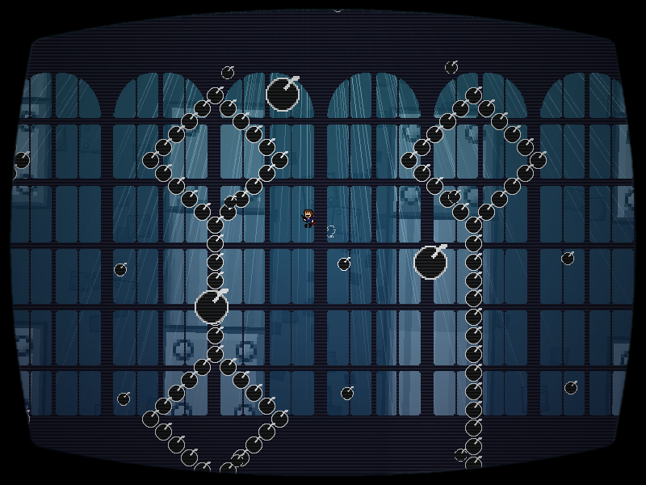

| creator | segment | label | jump |
|---|---|---|---|
| yuzuyu(main) NN(supervise) |
1:26.60~1:29.84 | R/Q/Q | infinite |
迷路を題材とした弾幕です。
プレイヤーが存在する系に出現する迷路状弾幕、および背景において形成される迷路に関して、これらは形状が一定の条件のもとランダムに決定され、かつ両者の形状については同一となっています。
プレイヤーに追従する弾幕を回避しながら、背景を移動するプレイヤー状の影の位置を追跡することを目的としています。
なお、初期状態におけるプレイヤーと影に関して、それぞれの迷路に対する位置は一致しています。
また、影が経路を選択するアルゴリズムについては、三叉路または十字路に差し掛かった際に2回連続で同一方向（上下左右）を選択することはありません。